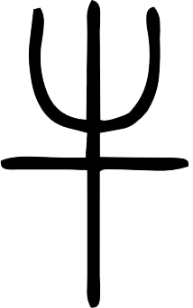

<div>
  <mat-toolbar color="primary">
    
  </mat-toolbar>

  <mat-sidenav-container>
    <mat-sidenav #snav [mode]="'push'" [fixedInViewport]="true" [fixedTopGap]="64" [fixedBottomGap]="0" style="width: 200px;">
      <mat-nav-list>
        <a mat-list-item *ngFor="let menu of menus" routerLink="{{menu.link}}" >{{menu.name}}</a>
      </mat-nav-list>
    </mat-sidenav>

    <mat-sidenav-content>
      <router-outlet></router-outlet>
    </mat-sidenav-content>
  </mat-sidenav-container>
</div>

